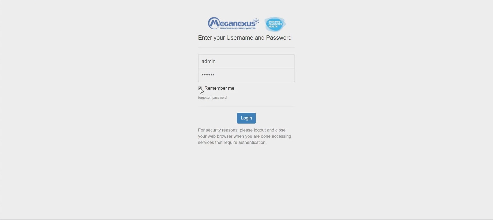
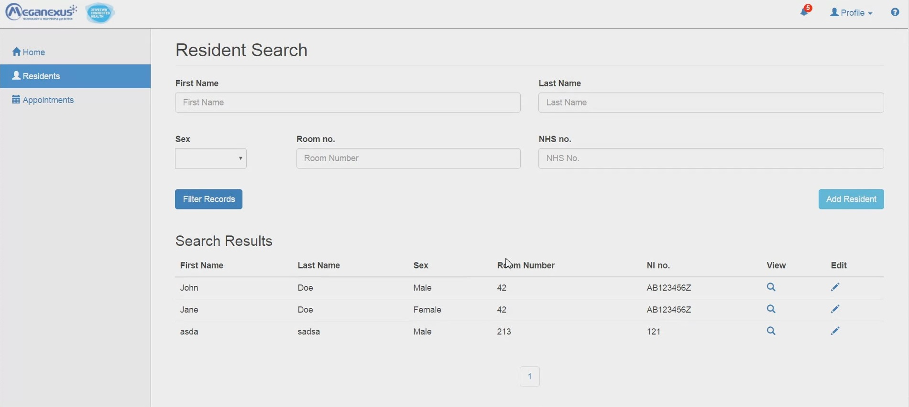
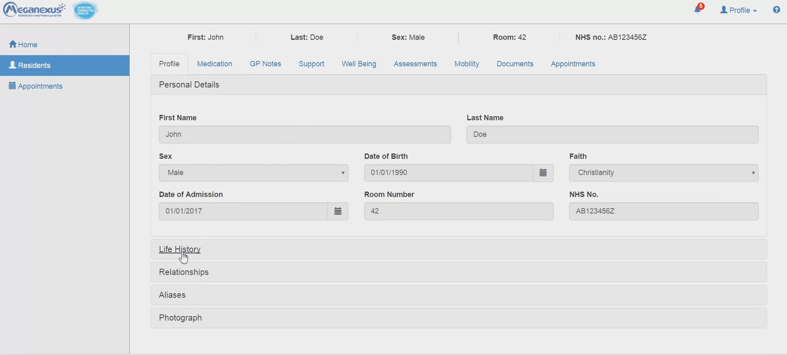
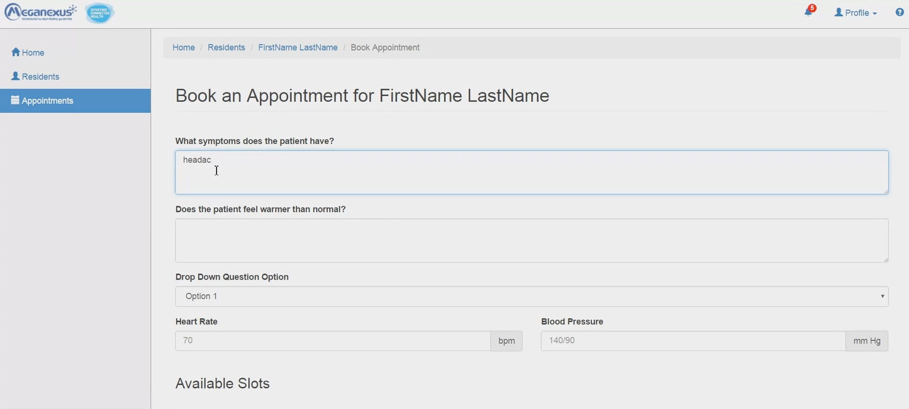
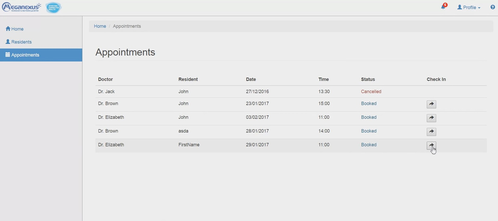
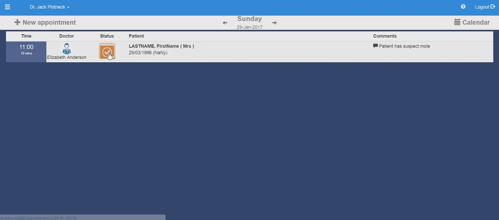

Considering you already have git installed, the cloning of the repository will not work until
you also install Git LFS (Large File Storage) , since it contains a number of large files referenced by pointers to an external server.
1. Go to Git LFS and download the distribution matching your operating system.
2. Run the installer and follow the instructions.
3. Navigate to installation folder of Git LFS, open a Command Prompt and run: git lfs install
4. You are now ready to go!
Install some version of Python (2.7)
1. Install python libraries in virtual environment: pip install --editable .
2. Set the FLASK_APP environment variable (on OSX/Linux use export instead of set): set FLASK_APP=athome
3. Set the FLASK_DEBUG environment variable: set FLASK_DEBUG=true
4. Initialize database based on schema.sql: flask initdb
5. Run flask server: python athome/athome.py
6. Open "https://" + local_ip* + ":5000" in browser *local_ip -> Network and Sharing center-> click on the active connection -> details -> IPv4 Address
On this page, the user has to enter his credentials. For now, the database has only the username admin with the password default, but it can be populated.
This page has been left blank as the client does not know yet what should be included here. From this page (like from any other page on the AtHome site) the user can also see the button for information page, the one for notifications and the one for log out and user profile.
From this page the user can see the users information, that can be edited, as well as the profile picture that can be changed.
On this page the user can filter the results by First Name, Last Name, Sex, Room number or NHS number. After
he sees the results, he can view the details of each patient and edit them. Also, he can add a new entry for a new patient.

Information about a patient include Personal Details, Life History, Relationships, Aliases and Photograph. On each of those tabs are
details on the specific field that can be viewed and edited.

On the Appointments tab of a patient, the user can create a new appointment for a consultation with a doctor.
On this page the user has to enter some details about the patient (symptoms, heart rate etc.) and book an appointment based on the available slots.
On this page, the user can see the appointments and check in for any of them, waiting for the doctor.
On this page, the user has to enter his credentials. For now, the database has only the username admin with the password default, but it can be populated.
This page has been left blank as the client does not know yet what should be included here.
This page has been left blank as the client does not know yet what should be included here.
On this page, the user can search on the calendar for appointments, and also he can check in to connect with the patient on the 2-way-video conference.
